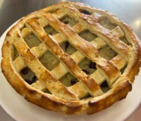

← Volver al módulo 1

Pie de Manzana
Pie tradicional con manzanas rojas camuesa, aromatizado con canela y clavo.
Ingredientes
- 2 ½ tazas de harina
- ½ taza de mantequilla sin sal
- ½ taza de azúcar
- 1 cucharada de polvo de hornear
- 2 huevos
- Leche
- 1 clara para barnizar
- 7 manzanas grandes rojas camuesa
- 1 taza de azúcar
- 2 tazas de agua
- 5 rajas de canela
- 8 clavos de olor
- ½ taza de jugo de limón
- ½ taza de uvas pasas
- ¼ taza de almendras trituradas
Preparación
Mise en place; pelar y cocer las manzanas con canela, azúcar y clavos.
En un bol, mezclar harina, mantequilla y polvo de hornear; realizar arenado.
Abrir un volcán, añadir huevos, azúcar y leche; integrar y compactar.
Llevar la masa al congelador 15 min.
Uslerear la masa y colocar en molde engrasado; pinchar con tenedor y hornear 10-15 min a 180 °C.
Para el relleno, saltear manzanas cocidas con mantequilla, jugo de limón, uvas pasas, almendras y coñac.
Rellenar la masa, hacer enrejado, barnizar con huevo y hornear hasta dorar.